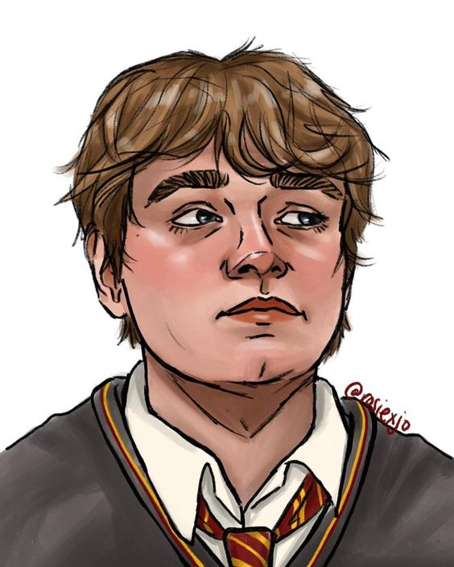

Sirius Black
 Sirius foi o último herdeiro dos Black, uma notável família bruxa de sangue
puro. A família Black acreditava fortemente no elitismo puro-sangue, recusando-se a
confraternizar com trouxas ou nascidos-trouxas e traidores de sangue, além de
reverenciar as Artes das Trevas. Sirius rejeitava estes valores, o levando a um conflito
com sua família.
Sirius foi o último herdeiro dos Black, uma notável família bruxa de sangue
puro. A família Black acreditava fortemente no elitismo puro-sangue, recusando-se a
confraternizar com trouxas ou nascidos-trouxas e traidores de sangue, além de
reverenciar as Artes das Trevas. Sirius rejeitava estes valores, o levando a um conflito
com sua família.
Peter Pettigrew
 Peter Pettigrew, geralmente conhecido pelo seu apelido Wormtail (Rabicho), devido a sua forma de Animago, durante a sua juventude foi um grande amigo de Remus, Sirius e James. Apesar de ter lutado na Primeira Guerra Bruxa ao lado da Ordem da Fênix, ele mais tarde se aliou a Lorde Voldemort e seus Comensais da Morte.